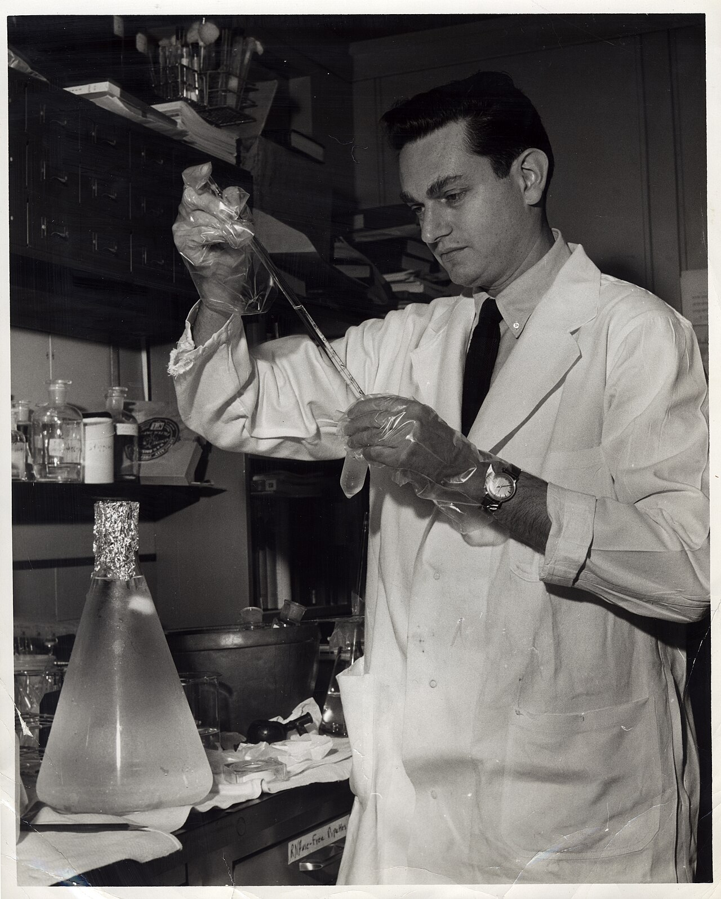

基因指导蛋白质的合成（上）：RNA与转录
本期导读
基因指导蛋白质的合成（上） · mRNA · RNA 聚合酶

视频原话 · 导读3 句
- 同学们好！这节课梳理人教版必修二第四章第一节的上半部分——RNA 与转录。8.0s
- 高考常考三种 RNA 的功能、转录的条件和过程，以及转录与 DNA 复制的比较。7.7s
- 我们按六个考点梳理，每个考点都讲清楚怎么考、怎么做。5.5s
RNA的组成和结构01#
| 比较项目 | DNA | RNA |
|---|---|---|
| 基本单位 | 脱氧核苷酸 | 核糖核苷酸 |
| 五碳糖 | 脱氧核糖 | 核糖 |
| 特有碱基 | T | U |
| 结构 | 双链（双螺旋） | 一般为单链，较短，能通过核孔 |
易错
tRNA 的单链折叠后局部形成碱基对，所以 tRNA 中也有氢键
视频原话4 句
- 考点一，RNA 的组成和结构。RNA 的基本单位是核糖核苷酸，由磷酸、核糖和含氮碱基组成。10.2s
- RNA 的碱基是 A、U、G、C，没有 T。4.8s
- RNA 一般是单链，比 DNA 短，能通过核孔从细胞核转移到细胞质中。7.1s
- 易错：RNA 一般是单链，但 tRNA 的单链会折叠，局部形成碱基对，所以 tRNA 中也有氢键。10.0s
三种RNA的功能02#
mRNA
信使 RNA：携带遗传信息，是翻译的模板
一条单链
tRNA
转运 RNA：识别密码子、转运氨基酸
三叶草形，有反密码子
rRNA
核糖体 RNA：与蛋白质组成核糖体
翻译的场所
考法
三种 RNA 都由转录产生，都参与翻译；少数 RNA 有催化作用（是酶）
视频原话4 句
- 考点二，三种 RNA。mRNA，信使 RNA，携带从 DNA 转录来的遗传信息，是翻译的模板。10.0s
- tRNA，转运 RNA，三叶草形，能识别密码子并转运氨基酸。6.8s
- rRNA，核糖体 RNA，和蛋白质一起组成核糖体。5.7s
- 考法：三种 RNA 都是转录产生的，都参与翻译；少数 RNA 还具有催化作用，是酶。8.9s
转录的概念与条件03#
在细胞核中，通过 RNA 聚合酶以 DNA 的一条链为模板合成 RNA 的过程
| 项目 | 内容 |
|---|---|
| 场所 | 主要在细胞核（线粒体、叶绿体中也有） |
| 模板 | DNA 的一条链 |
| 原料 | 4 种核糖核苷酸 |
| 酶 / 能量 | RNA 聚合酶；ATP |
易错
原料是核糖核苷酸；RNA 聚合酶兼有解旋作用，转录不需另加解旋酶
视频原话4 句
- 考点三，转录的概念：RNA 是在细胞核中，通过 RNA 聚合酶以 DNA 的一条链为模板合成的，这个过程叫转录。11.3s
- 场所：主要在细胞核，线粒体和叶绿体中也能转录。5.5s
- 模板：DNA 的一条链；原料：4 种核糖核苷酸；酶：RNA 聚合酶；还需要能量。8.6s
- 易错：转录的原料是核糖核苷酸，不是脱氧核苷酸；RNA 聚合酶兼有解旋作用，转录不需要另加解旋酶。10.4s
转录的过程04#
- 1解旋DNA 双链解开，碱基暴露
- 2配对A—U、T—A、G—C、C—G
- 3连接RNA 聚合酶连接，由 5′ → 3′ 延伸
- 4释放RNA 脱离模板，DNA 双链恢复
解题方法
由模板链写 mRNA：配对时 A 配 U；mRNA 序列与非模板链相同，只是 T 换成 U
视频原话5 句
- 考点四，转录的过程。第一步，DNA 双链解开，碱基暴露出来。6.8s
- 第二步，游离的核糖核苷酸与模板链上的碱基互补配对：A 配 U、T 配 A、G 配 C、C 配 G。9.5s
- 第三步，在 RNA 聚合酶的作用下，核糖核苷酸依次连接，RNA 链从 5′ 端向 3′ 端延伸。9.3s
- 第四步，合成的 RNA 从 DNA 链上释放，DNA 双链恢复。6.4s
- 解题方法：由模板链写 mRNA，把 T 换成 U 再配对；mRNA 的序列与非模板链基本相同，只是 T 换成 U。10.8s
转录与复制的比较05#
| 比较项目 | DNA 复制 | 转录 |
|---|---|---|
| 模板 | DNA 的两条链 | DNA 的一条链 |
| 原料 | 4 种脱氧核苷酸 | 4 种核糖核苷酸 |
| 酶 | 解旋酶、DNA 聚合酶 | RNA 聚合酶 |
| 特有配对 | A—T | A—U |
| 产物 | 两个 DNA | 一条单链 RNA |
易错
高度分化的细胞不再进行 DNA 复制，但仍能转录和翻译
视频原话4 句
- 考点五，转录与 DNA 复制的比较。模板：复制以两条链为模板，转录只以一条链为模板。9.0s
- 原料：复制用脱氧核苷酸，转录用核糖核苷酸；酶：复制用解旋酶和 DNA 聚合酶，转录用 RNA 聚合酶。11.1s
- 配对：转录特有 A—U 配对；产物：复制得到两个 DNA，转录得到一条单链 RNA。8.8s
- 考法：常用表格比较。易错：已高度分化的细胞不再进行 DNA 复制，但仍能转录和翻译。9.5s
转录的易错点06#
- 1转录以基因为单位，不是整个 DNA 一起转录
- 2不同基因的模板链不一定是同一条链
- 3同一基因在不同细胞中不一定转录：基因的选择性表达
易错
一个 DNA 可转录出多种 RNA；实际 mRNA 碱基数少于基因碱基数的一半（有不转录的部分），计算题中一般忽略
视频原话4 句
- 考点六，转录的易错点。转录是以基因为单位进行的，不是整个 DNA 一起转录。8.2s
- 一个 DNA 上有许多基因，不同基因的模板链不一定是同一条链。6.3s
- 同一个基因在不同细胞中不一定都转录，这就是基因的选择性表达。6.3s
- 易错：一个 DNA 可转录出多种 RNA；实际 mRNA 碱基数少于基因碱基数的一半，因为基因中有不转录的部分，计算题中一般忽略这一点。13.5s
易错速查✓
先自己判断，再点按钮查看对错与解析。
- 1RNA 一般是单链，含有核糖和碱基 U说法正确。
- 2tRNA 只含有 3 个碱基说法错误：tRNA 由许多核苷酸组成，一端的 3 个碱基构成反密码子
- 3转录以 DNA 的两条链为模板说法错误：以 DNA 的一条链为模板
- 4转录需要解旋酶和 DNA 聚合酶说法错误：需要 RNA 聚合酶（它兼有解旋作用）
- 5转录时碱基配对方式有 A—U说法正确。
- 6一个 DNA 只能转录出一种 mRNA说法错误：以基因为单位转录，可转录出多种 RNA
一条链作模板，A 配 U！
视频原话 · 易错速查5 句
- 最后，用六道判断题检验一下。3.6s
- 判断一？对。判断二？错，tRNA 由许多核苷酸组成。7.4s
- 判断三？错，只以 DNA 的一条链为模板。判断四？错，转录用的是 RNA 聚合酶。9.6s
- 判断五？对。判断六？错，以基因为单位，可转录出多种 RNA。8.0s
- 六个考点串成一条线：一条链作模板，A 配 U。我们下期再见！6.5s
图片来源
图片来源：Wikimedia Commons —— N. MacVicar, National Institutes of Health《Marshall Nirenberg performing experiment》Public domain
NIH / N. MacVicar, Public domain